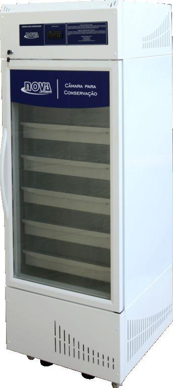
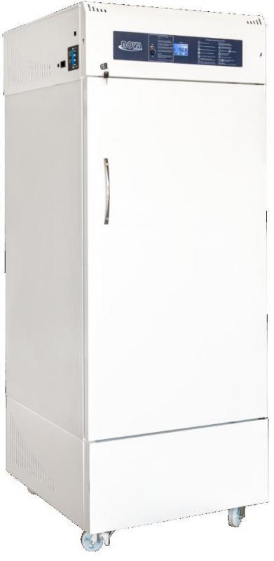
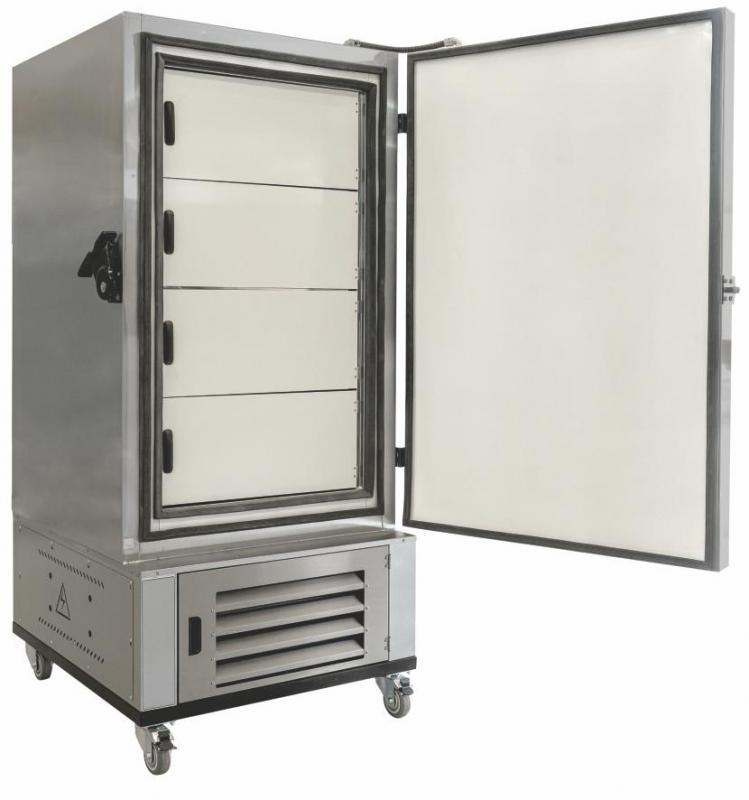
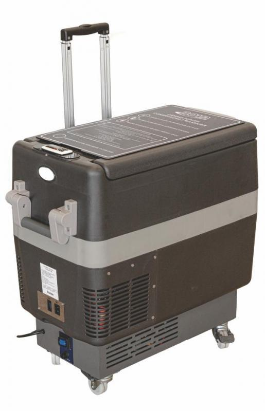

NOSSA LINHA DE PRODUTOS
NOSSA LINHA DE PRODUTOS
-
SANGUE
-
VACINAS
-
FREEZER
-
ULTRAFREEZER
INFORMAÇÕES
-

Câmara de Conservação de Vacinas
-

Freezer para Laboratório
-

Ultrafreezer 80
-

Câmara para Transporte de Vacinas